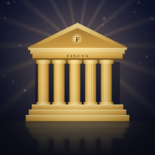

Fiscus BoardNeed help or found a problem? Email support@fiscusboard.app and we'll get back to you, usually within 2 business days.
Every amount is converted using 26 fortnights a year. A monthly bill counts as 12 ÷ 26 of its amount each fortnight, a quarterly bill as 4 ÷ 26, and a weekly one as 2. Settings can show everything per week, fortnight or month instead.
Tap a section's ••• menu and choose how many people it's split between. The section then shows both the full total and your share, and only your share counts towards your overall budget.
Turn on Review every 3 months in Settings. When a review is due, each item gets a tick circle. Tick items off as you check them, and once they're all done the next review is set for 3 months later.
Only on your iPhone. There's no account and nothing is uploaded. Deleting the app deletes your budget.
Open Settings, paste your backup text into Restore from backup, tap Restore, then confirm. This replaces the budget currently in the app.